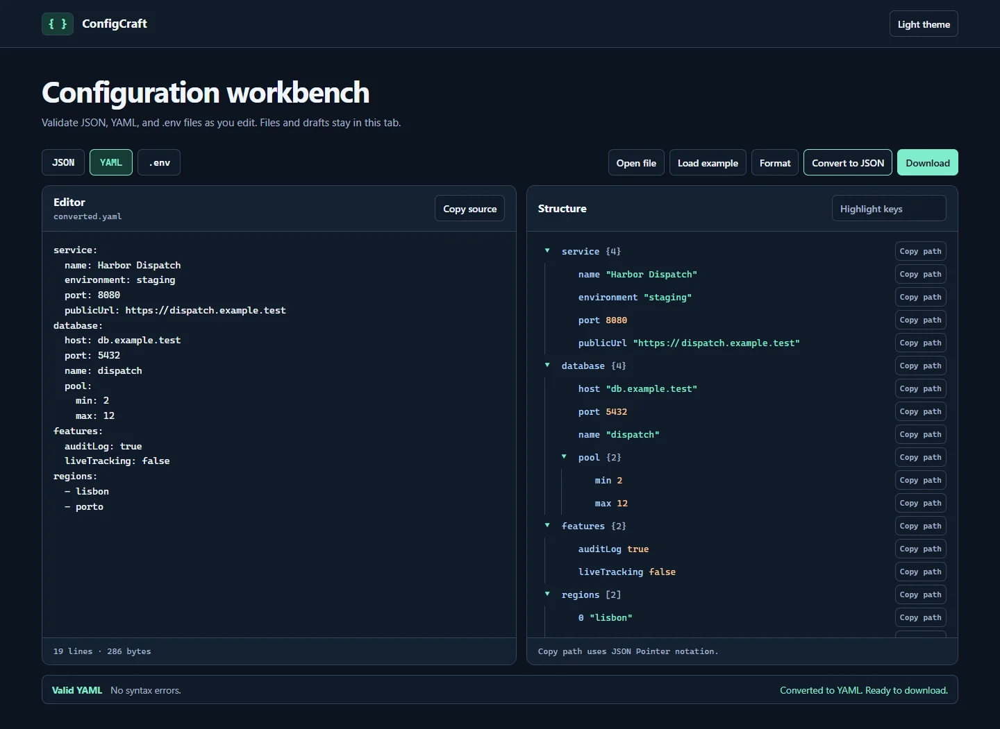
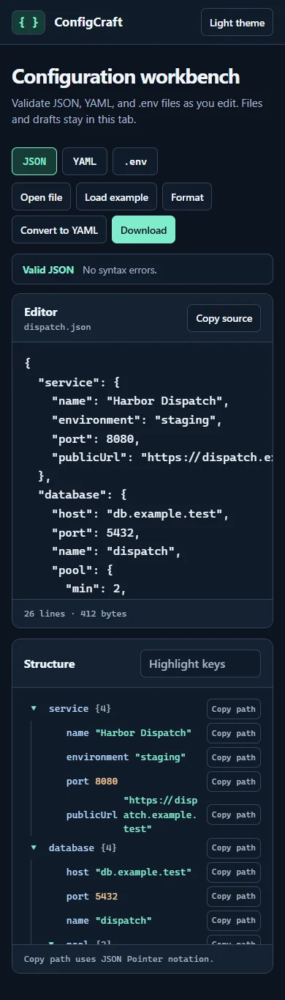

Engineering project · Runtime screenshot
ConfigCraft
Inspect and convert JSON, YAML and dotenv in a browser workbench with validation and structured navigation.
Local portfolio demo
Public source access pending.
Run the local demo
From the prepared project checkout, run these commands and open the address printed by the server. The repository may require access.
cd configcraft
npm ci
npm run dev

Problem
Developers need to inspect configuration structure and convert supported formats without sending file contents to a server.
Architecture
React and Vite share a parser and serialization layer between the editor, validation, structure tree and conversion actions. Drafts remain in browser memory.
Engineering decisions
- Reject duplicate JSON keys, unsafe numeric values, YAML aliases and unsupported tags.
- Use JSON Pointer paths and one in-memory draft per format to keep inspection and editing consistent.
Implemented workflow
- Remove a closing brace and inspect validation feedback, then restore the document.
- Convert the staging configuration to YAML, download it and reopen it as JSON.
- Inspect dotenv string values and duplicate-assignment warnings.
Checks and evidence
Prepared application screenshots and the source README document this workflow. Application checks were not rerun during this portfolio update.
- Reviewed the source README and prepared screenshots in project-2026 on 25 November 2026.
Scope and next steps
- Validation covers syntax and representable values, without an application-specific schema.
- Files are limited to 256 KiB and 70 nesting levels. Formatting, quoting and YAML comments can change during conversion.
- Drafts are discarded on reload.
Technology
React · JavaScript · Vite · JSON · YAML
Preview availability
Screenshots show the prepared local version. Hosted demos remain pending, and source access may require permission. Local setup requirements and remaining limits are documented above.
← Return to portfolio